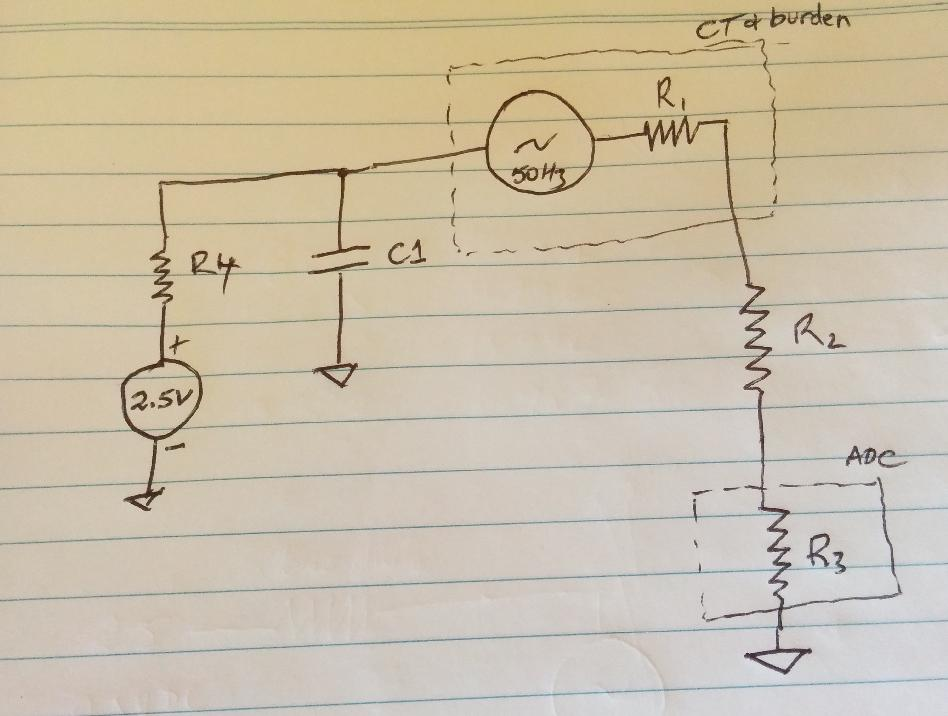

Hello everyone, I live in Italy and I'm monitoring a photovoltaic system, I wanted to know why, part production, sensors SCT-013-000 from the measure 0 - 0.65A is always higher. That is, 0,10A passage of current, the sensor measures 0.40A. still current 0.65A measure 0.85A when the passage of current of 0.90A the measurement is ok.
While the findings of the consumption is ok.
Using Arduino leonardo for pads.
How can I fix this?
It 'a problem of sensor?
Someone has my same problem?
Safe for your feedback
sincerely yours
Measurement error from 0.0A - 0.65A
Submitted by Gerardo on Wed, 28/01/2015 - 19:29»
Re: Measurement error from 0.0A - 0.65A
Not a problem with the current transformers, but we believe a problem with your Arduino. It is almost certainly digital noise from the main part of the processor getting in to the analogue to digital converter, it is being added to the millivolt signal from your CT and then the rms conversion mathematics rectify it along with the wanted signal.
If you measure the voltage also, then use emonLib to calculate real power, you will find the result is much more accurate as the noise is not rectified and therefore positive and negative spikes of noise tends to cancel each other.
Re: Measurement error from 0.0A - 0.65A
Hello Robert,
how do I calculate real power? Now I'm using:
emon.calcVI(20, 2000);
float ACV= emon.Vrms;
double Irms = emon.calcIrms(1480);
Thanks for your response
Re: Measurement error from 0.0A - 0.65A
You are already calculating real power. After you have done emon.calcVI(20, 2000), real power is available in emon.realPower. You also have emon.apparentPower & emon.powerFactor. emon.Irms is there too without the need to call calcIrms separately.
Look at emonLib.cpp and emonLib.h to see what emonLib does.
Re: Measurement error from 0.0A - 0.65A
There are some relatively easy options that might be worth a try to see if they reduce noise.
How are you powering the Arduino? You really want that supply to be as ripple-free as possible. The easiest way to achieve that is to power it via the DC-in jack and use the onboard regulator. If you're powering the Vcc rail directly (or via the USB port) you really need that supply to be as clean as possible.
Assuming you're not trying to run off batteries, consider reducing the R values used to build the mid-rails. The 470Ks recommended are aimed towards low power consumption in battery operated environments, but could be reduced by one to two orders of magnitude when not running off batteries. You can do the simple experiment described in this thread: http://openenergymonitor.org/emon/node/6196 to see how much impact that has on noise.
A low-pass filter (aka anti-aliasing filter) on all your ADC inputs is always recommended. You can see a scope picture of one of those doing their magic in this thread: http://openenergymonitor.org/emon/node/9956
Re: Measurement error from 0.0A - 0.65A
Reducing the 470 kΩ resistors will not in fact affect the noise power. As the resistor value is decreased, the noise bandwidth increases in exactly the same proportion. Only the capacitor value affects the noise power, and that should not be increased, since unless a resistor is added in series with the ADC input, it would be possible to overload the protection diodes inside the IC package.
Recent tests show that the latest emonTx, which has better grounding and does not have the inductor separating digital and analogue grounds, does indeed have a slightly improved noise performance.
Anecdotally, Arduino boards have always been the source of more complaints about noise than the emonTx (all versions).
Re: Measurement error from 0.0A - 0.65A
Reducing the 470 kΩ resistors will not in fact affect the noise power.
I think that's only true across the entire spectrum; from DC to daylight as the RF guys like to say. The meters being built here are extremely bandwidth limited, and once you do that, cumulative noise power up to a given frequency is dependent on R.
In any case I'd be surprised if the thermal noise from the resistors is a significant source of noise. The real reason you want to keep those mid-rail dividers as low as the power budget permits is to make that rail as a low an impedance voltage source as possible, so that other noise in the system is attenuated. Ideally you'd use a voltage follower op-amp, as several contributors to these forums have done.
You can see an example of how noise injected onto the mid-rail (via my finger) affects the ADC readings depending on the value chosen for those resistors in the pointer above. Admittedly I don't have a cap there to help shunt that noise away, but it demonstrates how reliant you are on that cap with such high R divider. Sure, you could go for a very high quality cap with low ESR, but lower R values on your divider would help too. 470K seem crazy high... assuming of course you're not trying to conserve battery power.
Re: Measurement error from 0.0A - 0.65A
"to make that rail as a low an impedance voltage source as possible"
But if you do that, you need to add impedance somewhere in the loop to limit the current in the input protection diodes under fault conditions.
Re: Measurement error from 0.0A - 0.65A
you need to add impedance somewhere in the loop to limit the current in the input protection diodes under fault conditions.
Fault as in a short in your toaster? How does stiffening the mid-rail make you any more susceptible to over-current from that? Even the building blocks page invites you to use anything from 10K to 470K to derive the mid-rail, and mentions:
We have been using 10 kΩ resistors for mains powered monitors. The emonTx uses 470 kΩ resistors to really keep the power consumption to a minimum as it is intended to run off batteries for several months.
Anecdotally, Arduino boards have always been the source of more complaints about noise than the emonTx (all versions).
So anything we can do to help them is a good thing, right?
Re: Measurement error from 0.0A - 0.65A
And why is a 1 kΩ series resistor included in the V3 - precisely because protection is marginal. Just because there hasn't been a proven case doesn't mean it can't happen. The fault level in the UK is generally around 300 kVA, and if you get a full-blown fault downstream of the CT, there's just about enough getting through the standard CT given worst-case components to be right on the limit of the diodes.
"So anything we can do to help them is a good thing, right?" Indeed, it's called an emonTx V3.4.
Re: Measurement error from 0.0A - 0.65A
a 1 kΩ series resistor included in the V3
That sounds like a great idea, and hopefully Gerardo will follow your lead. For even more protection, you could do that and add some beefy external protection diodes. But how does this relate to the stiffness of the mid-rail which is what we were discussing. I repeat my question:
How does stiffening the mid-rail make you any more susceptible to over-current from that?
("that" being the short circuit in your toaster).
Re: Measurement error from 0.0A - 0.65A
Q: What limits the current if there isn't a series resistor there?
A: The Thévenin equivalent impedance of the bias chain, of course! It makes no difference whether the limiting impedance is before or after the CT, it's still in series with the input. That's a very good reason for not increasing that bypass capacitor, too.
Re: Measurement error from 0.0A - 0.65A
Q: What limits the current if there isn't a series resistor there? A: The Thévenin equivalent impedance of the bias chain, of course!
I'm afraid it's still not obvious to me. Here's my attempt at an equivalent circuit:

where:
R1 - total impedance of CT/burden combo
R2- new series protection resistor
R3 - internal impedance of the ADC pin
R4 - equivalent R of the mid-rail divider
C1 - bypass cap
If we use 470K dividers, then R4 is 235K. If we use 10K dividers then R4 is 5K, but either way it's in parallel with C1 whose reactance is about 300 ohms. The impedance of that side of the circuit is 299.6 ohms or 283 ohms. Is that really all we're quibbling over?
That's a very good reason for not increasing that bypass capacitor, too.
As far as I know, you're the only one suggesting that (or not suggesting that). I'm talking about lowering the mid-rail dividers, not changing the capacitor.
Re: Measurement error from 0.0A - 0.65A
hello dBC, I now have this as I can adapt to your schedule?
Thanks for your friendly reply
Re: Measurement error from 0.0A - 0.65A
Provided you're not trying to run off batteries, I'd make R4 and R5 10K rather 470K. I'd add a 1K series resistor on the "Arduino Analog In", and I'd power your Arduino via it's DC-in jack (typically 7-12V DC) and definitely not via the USB port. Try all that and see if your low level measurements improve.
And consider using 1% resistors for most of that stuff. While the filters and calibration process will cover you for their tolerance deviation, I think 1%ers are usually more stable as well. The new 1K series resistor can be 5% as it'll only ever see current during fault conditions, but stability in all your other resistors is pretty critical to good results.
Re: Measurement error from 0.0A - 0.65A
I can use Emonlib 5V or should I use a 3.3 V ? because with 5V me incorrect values . Thank You
Re: Measurement error from 0.0A - 0.65A
Which sketch are you using? If you are using the correct sketch for the emonTx SHIELD, the supply voltage is measured inside emonLib and it should scale the measured values properly. But you must NOT define "emonTxV3" in your sketch, because when you do, it uses a fixed value of 3.3 V (and your voltage, current and power will all be wrong).